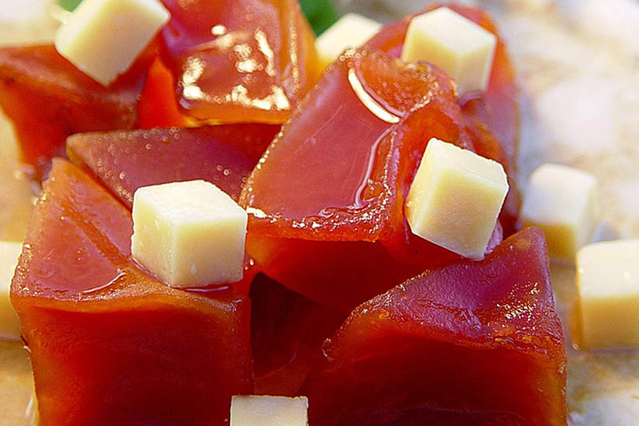

Restaurante-La Buena Mesa
Comida tradicional yucateca

Los deleites culinarios de la cocina típica yucateca están hechos de una exquisita mezcla de ingredientes utilizados por los antiguos mayas, con sabores traídos por los españoles durante la Colonia. La inigualable conjunción de condimentos y especias tales como la pepita de calabaza, el orégano, la cebolla morada, la naranja agria, el chile dulce, la lima, el tomate, el achiote, el chile xcat, el chile habanero, el chile max y el cilantro, le dan ese sazón tan especial a la comida de esta región, que alguna vez fue conocida como "la tierra del faisán y del venado" por utilizar estas especies como ingredientes principales de los manjares que aquí se preparaban. Actualmente, éstos han sido sustituidos por carne de cerdo y pavo, y se han agregado diversos condimentos dando lugar a los deliciosos platillos regionales que hoy en día, todos conocemos y disfrutamos.
La cocina meztiza

Los mayas no conocían el trigo, la base de su alimentación era el maíz. El trigo fue traído por los exploradores y conquistadores españoles e intentaron aclimatarlo a la Península, mas no lo consiguieron, a pesar de sus ensayos y experiencias, a causa del excesivo calor.
Por ese motivo, los españoles se aficionaron al pan de maíz y, en general, a los alimentos de los indios. Como éstos, comieron con gusto el frijol, con el que elaboraron un potaje con carne de cerdo, al que llamaron "frijol con puerco"; así como otros variados platillos. Aprendieron a comer chile. Con la chaya (chay) hacían una especie de tamales a los que les añadían pepita de calabaza molida y salsa de tomates. Comían calabazas de la tierra y aprovechaban su semilla como almendra para confeccionar guisos y dulces. Comían también camotes, especie de patata dulce con los que fabricaban dulces y pastas. La jícama, raíz tuberosa, la comían como fruta.
La panificación con masa de harina de trigo
Siendo tan escaso el trigo, el pan solo se elaboraba en los conventos. Entre los frailes, nunca faltaron expertos cocineros y reposteros que no solo confeccionaban las comidas cotidianas, sino también panes, tortas, pasteles y dulces que servían de postre a sus comidas. Entre los frailes se generalizó también, el uso del cacao molido, con el que confeccionaban el chocolate: una bebida espumosa y aromática.
La dulceria
Los primeros profesores en repostería fueron las monjas concepcionistas que establecieron su convento en Mérida en 1596, y que enseñaban también a sus educandas labores de aguja, bordados, tejidos, repostería y dulces. Del convento salían expertas maestras en la confección de la dulcería criolla. Llevaron a sus hogares ese exquisito arte y establecieron después de la extinción del convento de concepcionistas en 1867, pequeñas industrias con que se ganaban la vida.
Algunos dulces típicos yucatecos son:
Estamos ubicados en la Calle Principal 123, Mérida, Yucatán.